Contrast and intensity transforms
About this lecture
The last unit showed a 12-bit image on an 8-bit screen with a window: a straight line from raw values to grey levels. This unit bends that line.
- Point operations: one curve, applied to every pixel; stored as a lookup table.
- Shaped curves: gamma and log. What the slope of a curve does to contrast and noise.
- Curves chosen by the data: histogram equalisation, and why its result is only roughly flat.
- Local curves: CLAHE. Curves chosen by another image: histogram matching.
- What all of this does to measurements: transform for looking, measure on the raw data.
Slides titled The math give the formulas and proofs; the ideas are complete without them.
Recall: a window is a curve
From 12- and 16-bit images: a window [\ell, h] maps raw values to the 256 display levels by a straight line, clipped at black and white.
- Draw it as a curve: raw value on the x axis, display level on the y axis, the histogram behind it.
- Raw 1653 (the middle of the window) becomes display level 128.
Every transform in this unit is another curve on this plot.
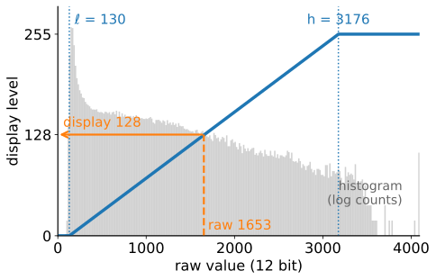
Point operations
A point operation computes each new value from the old value of the same pixel only: s = T(v), the same function T everywhere. Position and neighbours do not matter: the whole operation is its curve.
- Examples: the window, the negative (s = 255 - v for 8 bits), contrast stretching, clipping, a threshold, adding a constant.
- Not point operations: blurring, the median filter, anything that looks at neighbours.
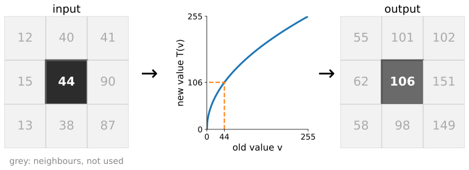
A gallery of curves
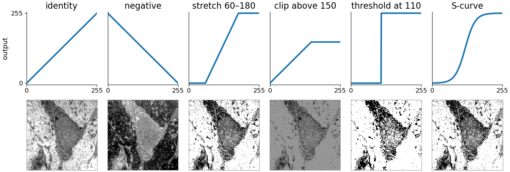
The threshold is the most extreme point operation: a step from 0 to 255 (thresholding day). The S-curve adds contrast in the middle and takes it from the ends. Micrograph: R. M. Hunt, CC BY 3.0.
Lookup tables
An integer image has only L possible values: 256 for 8 bits, 4096 for 12 bits. So compute the curve once per value and look the result up.
| raw v | 0 | 1 | 2 | … | 44 | … | 255 |
|---|---|---|---|---|---|---|---|
| T(v) | 0 | 16 | 23 | … | 106 | … | 255 |
- Cost: L evaluations of T (256 or 4096), then one table read per pixel, for any number of pixels.
- A display program changes the table, never the image: that is why a window can be dragged live.
- Two curves in a row are one table: T_2(T_1(v)) is again a table of L entries.
- Image libraries call this a LUT (lookup table).
Reading a curve: the slope is the contrast
Two neighbouring raw values v and v + 1 end up T'(v) apart: the slope is the contrast gain.
- Slope > 1: values move apart. More contrast, and the noise is amplified by the same factor.
- Slope < 1: values move together, detail is compressed.
- Slope 0 (clipping, flat parts): values merge; the information is gone.
- A curve that rises everywhere (monotone) keeps the order: brighter stays brighter. A falling part swaps it.
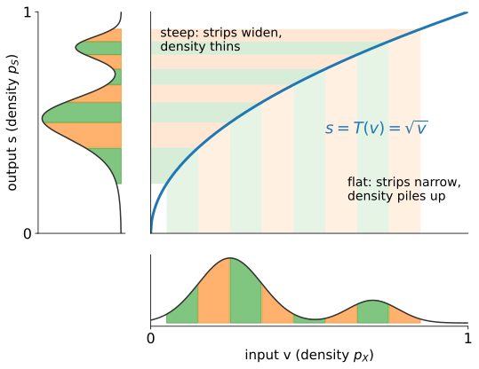
The math: a curve reshapes the histogram
Let the intensity be continuous with density p_X, and T rising and differentiable. The pixels in [v, v + dv] land in [s, s + ds] with ds = T'(v)\,dv; their number does not change:
p_S(s)\,ds = p_X(v)\,dv \quad\Rightarrow\quad p_S(s) = \frac{p_X(v)}{T'(v)}, \qquad s = T(v).
- Slope > 1 spreads the density thin; slope < 1 piles it up (the figure on the previous slide).
- Composition: (T_2 \circ T_1)' = T_2'(T_1(v))\,T_1'(v): gains multiply.
- A point operation can be undone exactly when it is one-to-one on the values that occur (strictly rising or strictly falling there). A flat part merges values; a curve that rises and then falls sends two inputs to one output.
Gamma
Scale the values to [0, 1] and raise them to a power: s = v^\gamma.
- γ < 1 brightens the darks: it stretches them and compresses the brights. γ > 1 does the reverse; γ = 1 is the identity. Black and white stay fixed.
- γ = 0.5: 0.04 → 0.2 and 0.81 → 0.9. Slopes there: 2.5 and 0.56.
- Screens and image files also use a power law, for storage (colour day, linear RGB): a different reason, same shape.
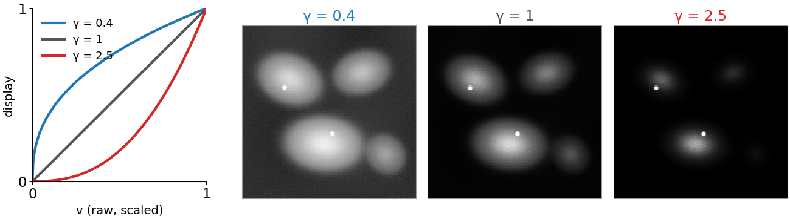
Log: equal ratios, equal steps
s = c \log(1 + v): a ratio becomes a step. Every factor of 10 gets the same number of display levels.
- 12 bits on 8: c = 255/\ln 4096 \approx 30.7. Then 10 → 74, 100 → 141, 1000 → 212, 4095 → 255: about 71 levels per decade.
- Uses: images spanning orders of magnitude (dim cells next to bright spots, astronomy), and Fourier spectra, always shown as \log(1 + |X|) (Fourier unit).
- Too much log makes the background noise as prominent as the objects.
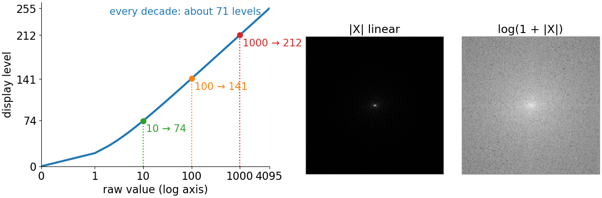
The math: gamma, log and noise
- Slope of gamma: \dfrac{d}{dv}v^\gamma = \gamma\,v^{\gamma - 1}. For γ < 1 it goes to ∞ as v \to 0: gamma curves amplify the dark noise most.
- Log: \log(a v) = \log a + \log v. A multiplicative factor (exposure time, illumination) becomes an additive shift.
- Noise after a point operation (the delta method, first-order Taylor around the mean μ): T(X) \approx T(\mu) + T'(\mu)(X - \mu) \quad\Rightarrow\quad \operatorname{SD}\big(T(X)\big) \approx |T'(\mu)|\,\operatorname{SD}(X).
- Poisson counts have \operatorname{SD}(X) = \sqrt\mu. With T(x) = 2\sqrt x: T'(\mu) = 1/\sqrt\mu, so \operatorname{SD} \approx 1 whatever the brightness: the variance-stabilising transform pointed to in camera noise. It is a gamma of ½.
Try it: tone curves
Stretching 8 bits leaves a comb
A curve maps each input value to one output value. It can merge levels, but it can never split them.
- 8-bit data using values 6 … 70, stretched ×4 to fill 0 … 255: only 64 output levels are used, every 4th. The histogram is a comb; smooth gradients show bands (recall quantisation).
- The same stretch on the 12-bit data: 1025 raw values for 256 levels, 253 used. Smooth.
Rule: do contrast work on the 12/16-bit or float data; convert to 8 bits last, for display.
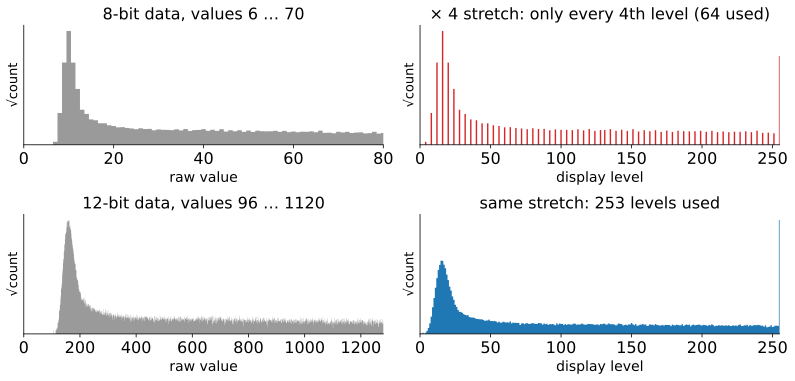
Let the histogram choose the curve
Where should a curve be steep? Where the pixels are: give the most contrast to the values that occur most often, and none to values that do not occur.
- Make the slope proportional to the histogram: steep at the peaks, flat in the empty tails.
- The curve whose slope is the histogram is its running sum: the cumulative histogram.
This is histogram equalisation.
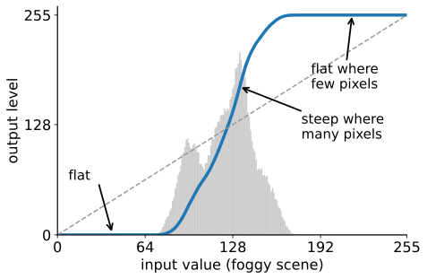
The cumulative histogram is the mapping
The cumulative histogram P(v): the fraction of pixels with value \le v. It rises from 0 to 1, steeply where there are many pixels.
Equalisation uses it as the curve: s = \operatorname{round}\big((L - 1)\,P(v)\big).
- Micrograph, L = 256: 8 % of the pixels are ≤ 80, so 80 → level 21; 40 % are ≤ 150, so 150 → level 101.
- A pixel’s new value says “brighter than this fraction of the image”.
- Result: about the same number of pixels at every output level.
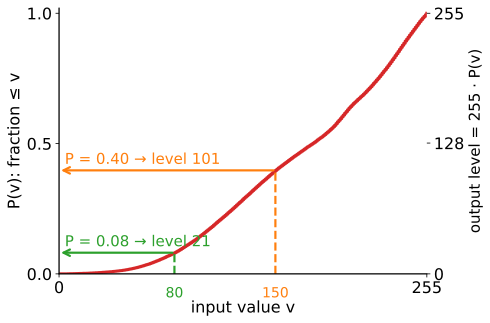
Worked example: 8 levels by hand
A 64-pixel image with 8 levels (L = 8):
| level v | 0 | 1 | 2 | 3 | 4 | 5 | 6 | 7 |
|---|---|---|---|---|---|---|---|---|
| count | 6 | 22 | 18 | 8 | 5 | 3 | 1 | 1 |
| cumulative | 6 | 28 | 46 | 54 | 59 | 62 | 63 | 64 |
| 7c/64 | 0.66 | 3.06 | 5.03 | 5.91 | 6.45 | 6.78 | 6.89 | 7 |
| new level | 1 | 3 | 5 | 6 | 6 | 7 | 7 | 7 |
Output counts at levels 0 … 7: 0, 6, 0, 22, 0, 18, 13, 5. A flat histogram would have 8 at every level.
Why only approximately flat
All pixels with the same input value get the same output value. The 22 pixels at level 1 stay together: they can be moved, not split.
- Levels can merge (3 and 4 here, by rounding), and output levels stay empty (0, 2, 4).
- The output has at most as many distinct values as the input.
- What is close to straight is the output’s cumulative histogram.
- The micrograph: 256 levels in, 195 used out.
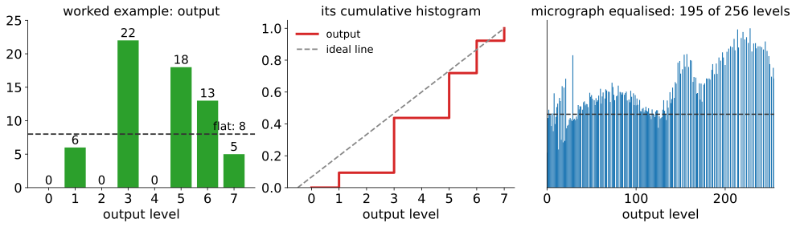
The math: equalisation
- Continuous case. If X has a continuous, strictly rising cumulative distribution F, then Y = F(X) is uniform on [0, 1]: \;P(Y \le y) = P\big(X \le F^{-1}(y)\big) = F\big(F^{-1}(y)\big) = y (the probability integral transform). With T = F the slope is T' = p_X, which is the “slope ∝ histogram” rule; the output density is p_X / T' = 1.
- Discrete case. s_k = \operatorname{round}\big((L - 1)F(k)\big) with F(k) = c_k / N. The output count at a level is a sum of input counts, so a level with h(k) > N/L stays above N/L; used output levels ≤ used input levels. Variant: s_k = \operatorname{round}\big((L - 1)\frac{c_k - c_{\min}}{N - c_{\min}}\big) maps the darkest occurring value to 0.
- Only ranks matter. For a strictly rising g: F_{g(X)}(g(v)) = P(g(X) \le g(v)) = F_X(v). Equalising g(X) gives the same image as equalising X.
- Exact equalisation: order all N pixels, break ties (at random, or by the local mean), give ranks r the level \lfloor rL/N \rfloor. Exactly flat, at the price of an invented order among equal pixels.
Try it: equalisation
Where global equalisation fails
One curve for the whole image, steep where most pixels are. Usually that is the background.
- The 12-bit image: the flat background is about half of all pixels, so it gets about half of the output levels. Its noise is amplified: SD 0.8 → 27.5 grey levels in the green box.
- Small objects with few pixels get little contrast; bright and dark regions compete for one curve.
- Rough rule: 40 % of the pixels in 20 of 256 levels gives a slope \approx 255 \cdot 0.4/20 \approx 5; noise of SD 3 becomes about 15.
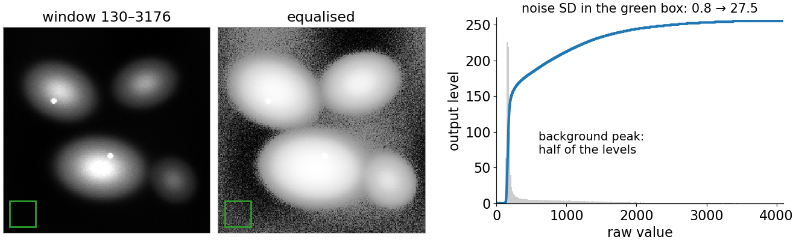
One curve per tile
Adaptive equalisation: cut the image into tiles (say 8 × 8) and equalise each tile with its own histogram. Each tile on its own gives seams at the tile borders.
- Instead, each pixel blends the curves of the four nearest tile centres, weighted by distance (bilinear interpolation, images unit).
- The curve depends on where the pixel is: the same raw value can become different display values in different places.
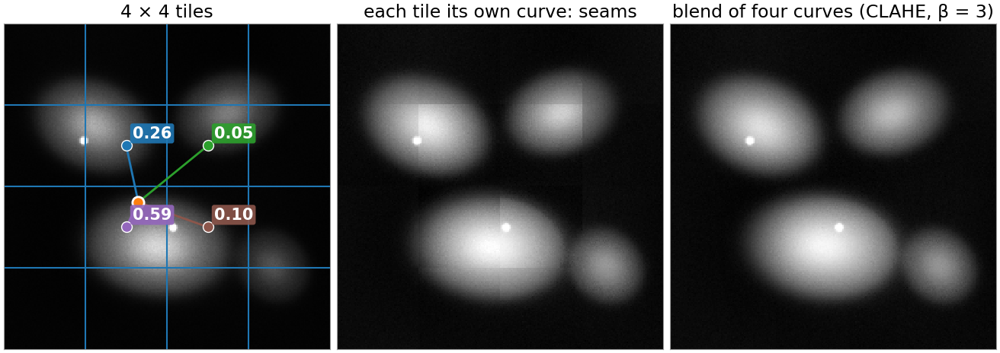
CLAHE: clip the histogram first
In a flat tile the histogram is one narrow peak, so its curve is nearly a step: noise explodes. Fix: clip every bin at β times the average count, spread the clipped excess evenly over all bins, then accumulate.
- The slope is the histogram, so the clip limit is the largest contrast gain: about β×.
- β = 1: a straight line (no change). β → ∞: plain adaptive equalisation.
- Two knobs: tile size (larger than the objects) and clip limit (how much contrast, and noise; typical β = 2 … 4).
- Contrast-Limited Adaptive Histogram Equalisation: image libraries call it CLAHE.

The math: CLAHE
For one tile with N pixels and B bins, histogram h:
- Clipped histogram: \tilde h(k) = \min\big(h(k),\, \beta N/B\big) + E/B, with E the clipped excess.
- Tile curve: T(v) = \dfrac{L - 1}{N}\sum_{k \le v}\tilde h(k).
- Slope (per bin, relative to the straight line, whose slope is (L - 1)/B): \dfrac{B\,\tilde h(v)}{N} \le \beta + \dfrac{E}{N}. After one spreading a bin can end slightly above the limit; repeating clip-and-spread until no bin exceeds it makes the bound exactly β.
- Interpolation: T(v; \mathbf x) = \sum_{i=1}^{4} w_i(\mathbf x)\,T_i(v) with bilinear weights w_i \ge 0, \sum w_i = 1. Each T_i rises in v, so the blend rises: at a fixed position the order is kept. Between positions \mathbf x and \mathbf y nothing relates T(\cdot; \mathbf x) to T(\cdot; \mathbf y).
Try it: CLAHE
Histogram matching
Make an image’s histogram look like a target: another image, a reference, a chosen shape. For each input value v, read its fraction F(v) in the source’s cumulative histogram; find the target value with the same fraction in G.
- Foggy scene to micrograph: v = 130 has F = 0.60; the micrograph value with 60 % of its pixels below is 197.
- Equalisation is matching to a flat target.
- Uses: tiles of a mosaic or frames of a time series that should look alike; input for a model trained on another instrument.
- It also erases real differences: match a treated image to a control and the treatment is gone.
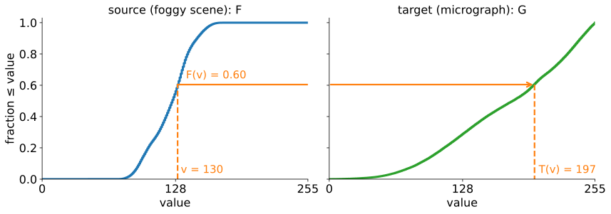
The math: matching
- The matching curve is T = G^{-1} \circ F, with the generalised inverse G^{-1}(u) = \min\{v' : G(v') \ge u\} (needed when G has flat parts or jumps).
- Continuous case: U = F(X) is uniform (previous math slide), and for uniform U, G^{-1}(U) has distribution G: P(G^{-1}(U) \le t) = P(U \le G(t)) = G(t). So T(X) has exactly the target distribution.
- Discrete case: the same rounding problem as equalisation, plus jumps of G: a whole input level lands on one target level, so the match is approximate.
- Equalisation: G uniform on \{0, \dots, L - 1\}, G^{-1}(u) \approx (L - 1)u.
- Worked: counts 6, 22, 18, 8, 5, 3, 1, 1 to the target 0, 0, 8, 8, 16, 16, 8, 8: cumulative 6, 28, 46, \dots against 0, 0, 8, 16, 32, 48, 56, 64 gives the mapping 2, 4, 5, 6, 7, 7, 7, 7.
What each transform does to measurements
| transform | order of grey values kept? | differences, ratios kept? | same raw → same output everywhere? | comparable between images? |
|---|---|---|---|---|
| linear window | yes | yes (after removing the offset; not where clipped) | yes | yes, with the same window |
| gamma, log | yes | no (log: ratios become differences) | yes | yes, with the same curve |
| global equalisation | yes | no | yes | no: the curve depends on the image |
| CLAHE | only locally | no | no | no |
| histogram matching | yes | no | yes | no: differences removed by construction |
Two cells, raw means 300 and 600 on a background of 100 (12 bit): background-subtracted ratio \frac{600 - 100}{300 - 100} = 2.5. After γ = 0.5 on v/4095, the same computation gives 1.98.
Try it: display vs data
The math: measurements under a point operation
- Only affine maps commute with averaging: \overline{T(v)} = T(\bar v) for all images only if T(v) = av + b.
- For a concave T (γ < 1, log), Jensen’s inequality: \overline{T(v)} \le T(\bar v). Pixels 100 and 900: \sqrt{500} = 22.4 but (\sqrt{100} + \sqrt{900})/2 = 20.
- Ratios after background subtraction, \frac{\bar a - \bar b}{\bar c - \bar b}, are kept by every affine T(v) = \alpha v + \delta (α > 0): \delta cancels in the differences, \alpha in the ratio. A window is affine only where nothing clips; a curve with T'' \ne 0 changes the ratio.
- Rank statistics commute with any rising T: \operatorname{median}(T(X)) = T(\operatorname{median}X), percentiles, the Spearman correlation (recall colocalisation), and any threshold chosen by a percentile (“the brightest 10 %”: the same mask).
- Otsu’s threshold does not simply move with T: it depends on class means and variances, which a non-linear T changes (exercise).
What to do
- Segment or detect on whatever helps: a gamma, a log, CLAHE. Then measure on the raw (linear) data inside the masks.
- Show images you compare with the same display settings, and say so in the caption.
- Report non-linear display adjustments (gamma, log, equalisation, CLAHE) in the figure legend. Journal image-integrity guidelines ask for the same.
- Normalise measurements (per well, per batch, against controls: intensity features), not pixels.
- CLAHE makes an image look evenly lit; it does not make it measurably even. Uneven illumination is corrected by dividing or subtracting a background (local thresholds).
The denoising unit asks the same question for restored images.
Summary
- A point operation is a curve s = T(v), applied to every pixel; stored as a lookup table.
- The slope is the contrast gain, for signal and noise alike; flat parts merge values; a rising curve keeps the order. A curve cannot create levels: work on high-bit data, convert to 8 bits last.
- Gamma brightens (γ < 1) or darkens (γ > 1); log gives every decade the same number of levels.
- Equalisation: the cumulative histogram is the curve. Only roughly flat for images, because equal values move together.
- CLAHE: one clipped curve per tile, blended between tiles; the clip limit caps the gain.
- Matching: G^{-1}\circ F; equalisation is matching to flat.
- Transform for looking and for finding objects; measure on the raw data. Never measure intensities on an equalised, CLAHE or matched image.